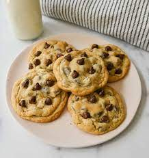

Chocolate Chip Cookies

Description
The best chocolate chip cookies in the world.
Ingredients
- 2 1/4 cups all-purpose flour
- 1 teaspoon baking soda
- 1 teaspoon salt
- 1 cup (2 sticks) butter, softened
- 3/4 cup granulated sugar
- 3/4 cup packed brown sugar
- 1 teaspoon vanilla extract
- 2 large eggs
- 2 cups semi-sweet chocolate chips
- 1 cup chopped nuts
Directions
- Preheat the oven to 375F and line a baking sheet with parchment paper.
- In a medium bowl, add the flour, baking soda, and salt. Whisk to combine and set aside.
- In a second bowl, add the butter, granulated sugar, and brown sugar. Beat together until light and fluffy, about 3 minutes.
- Add the eggs, one at a time, beating well after each addition.
- Add the vanilla and beat to combine.
- Gradually beat in the flour mixture.
- Stir in the morsels and the nuts.
- Drop a heaping tablespoon of dough onto your baking sheet, leaving 2 inches between each cookie.
- Bake for 9 to 11 minutes or until golden brown. Allow the cookies to cool on the baking sheet for 2 minutes after baking. Remove to wire racks to cool completely.